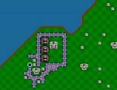

Rozhovor se zajímavou osobou
Milý čtenáři, dnešní rozhovor se zajímavou osobou bude s Viktorem Novákem, se kterým se znám už několik let a je to jeden z mých nejlepších kamarádů. Poznali jsme se přes společné přátele a hráli jsme spolu až do nedávna videohry. Žije v Ostravě se svojí přítelkyní a psem, i když je Viktor programátor, v současnosti pracuje jako opravář počítačů v menší firmě. Hraje na kytaru, jdou mu videohry a občas si zasportuje. Je to klidný člověk, dobře se s ním mluví a jednou za čas se stane neskutečně vtipným. Následující rozhovor probíhal přes discord a byl upraven pro příjemnější čtení.

Rozhovor
- Jak se jmenuješ?- Viktor Novák
- Kolik máš let? - Narodil jsem se 7. října 1996, takže mi je 26 let.
- Jaké máš vzdělání? - Dodělal jsem Střední průmyslovou školu elektrotechniky a informatiky s maturitou a Vysokou školu bánskou – Technická Univerzita Ostrava.
- Proč ses rozhodl studovat programování? - Protože jsem měl rád počítače a chtěl jsem se naučit, jak to funguje a jak s tím pracovat.
- Bylo programování, co sis představoval? - Ano, předtím než jsem se rozhodl, že tohle je to, co chci dělat, jsem si zjistil, co budu dělat a co očekávat.
- Zkoušel si programovat hry? - Ano, ale jenom menší minihry. To už musíš vědět, protože jsi je sám hrál.
- Proč už nepracuješ jako programátor ale jako pc opravář?- Programování mě sice baví, ale jako kariéra mi to nevyšlo, a proto jsem šel opravovat počítače jako práci, abych se uživil, a programovat jako koníček.
- Co si myslíš o IT oboru ve školách? - Programování určitě není pro všechny, je to složité a těžké na naučení, ale jestli to někoho baví, tak to je dobrý obor studia.
- Kdybys mohl jít zpátky v čase a studovat něco jiného, udělal bys to? - Kdybych věděl, že mi programování nevyjde jako práce, tak bych asi zkusil něco jiného, ale nelituju svého rozhodnutí oboru.
- Cestuješ rád? - Ano se svojí rodinou jsme cestovali po Evropě a Americe
- Co za sport hraješ nejraději? - S přáteli hraju jednou za čas fotbal a badminton si zahraju párkrát ročně ve stadionu, ale turnaje jsem nikdy rád neměl, sportuju pro radost, ne abych se snažil dělat, co půjde, abych vyhrál.
- Jak ses dostal k hraní na kytaru? - Na kytaru jsem hrál už jako dítě, protože mě k tomu dostali rodiče, a zůstalo to se mnou až do teď.
- Jak často cvičíš na kytaru? - Dvakrát týdně si zahraju alespoň půl hodinky, ale občas na to nemám čas a občas si zahraju pro zábavu, takže to nemůžu říct určitě.
- Co je tvůj aktuální cíl? - Chtěl bych to zkusit znovu s programováním jako práci a vytvořit nebo se alespoň účastnit vývoje alespoň jedné skvělé videohry.
- Otravuju tě moc s tímhle improvizovaným rozhovorem na poslední chvíli? - Vůbec, poslední dobou mám docela volno a potom, co jsi přestal hrát hry, jsme se moc nebavili, a Tak jsem rád, že jsme se zas pobavili.
